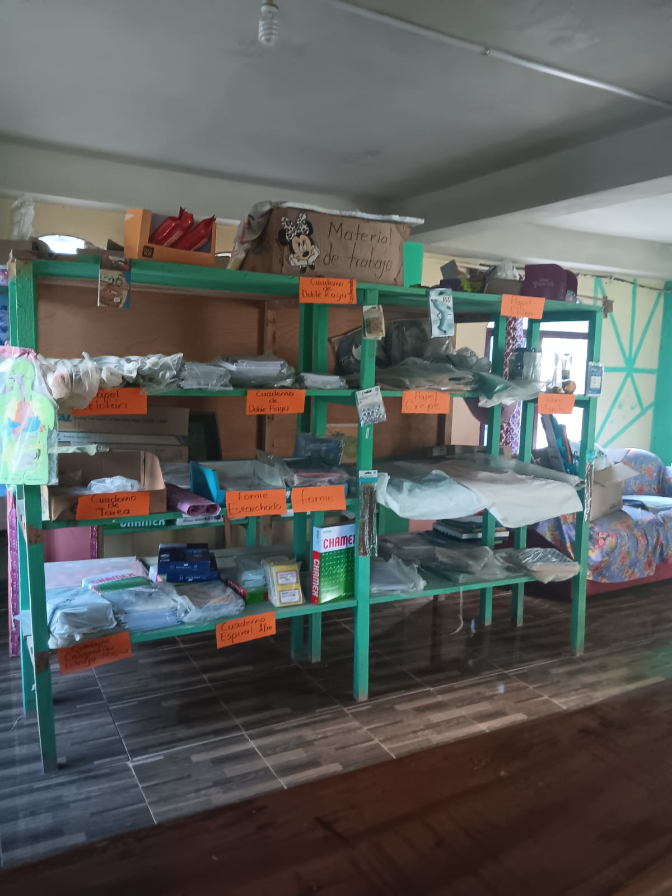
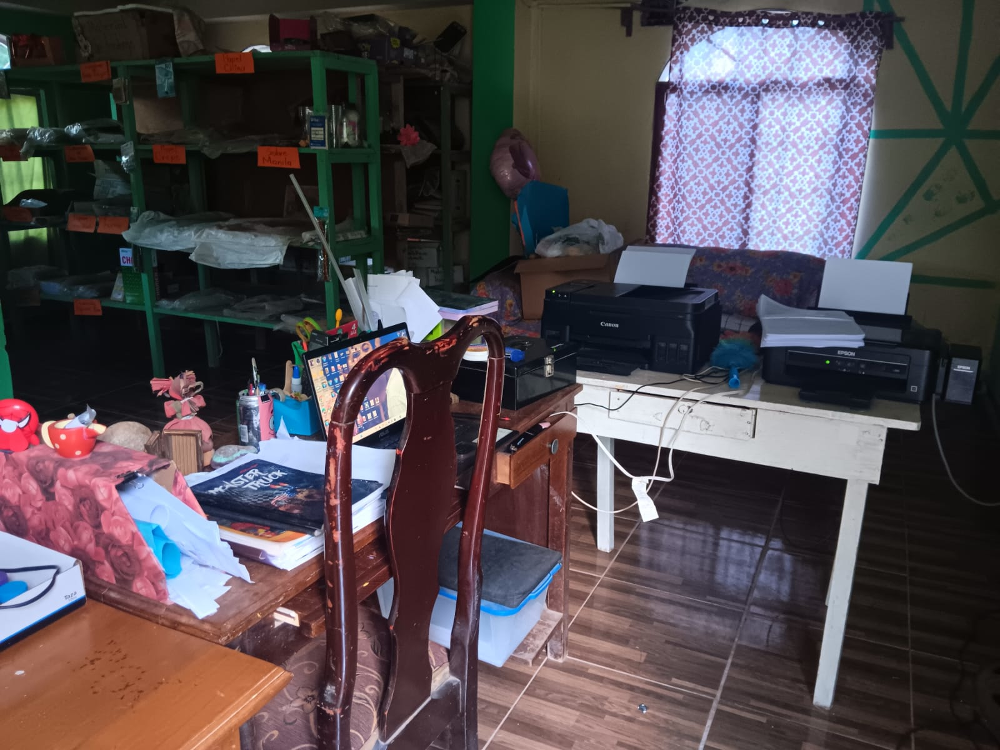

¿Quiénes Somos?
Fotocopias y Más fue fundado el 14 de febrero de 2020 por Grethel Orellana con el objetivo de brindar un servicio accesible, rápido y confiable en el área de fotocopias, impresiones y soluciones digitales. Nació como respuesta a la creciente necesidad de estudiantes, docentes y emprendedores que requerían servicios de impresión de calidad en zonas donde no existían estas facilidades.
Nuestra Historia
Iniciamos para cubrir una necesidad en nuestra comunidad, donde no existía un centro de copias ni servicios escolares accesibles. Nuestra meta desde el primer día fue facilitar a estudiantes, maestros y vecinos un espacio confiable donde pudieran resolver de forma rápida y económica sus tareas escolares, impresiones y gestiones básicas.
Con el paso del tiempo, hemos crecido y evolucionado, y hoy en día ofrecemos más de 6 servicios esenciales, entre ellos: fotocopias, impresiones a color y blanco y negro, escaneos, anillado de documentos, diseño básico, venta de útiles escolares, trámites digitales, entre otros.
Gracias a la confianza de nuestros clientes y al esfuerzo diario, nos hemos convertido en un punto de apoyo importante para la educación y el emprendimiento en nuestra comunidad. Nuestro compromiso sigue siendo el mismo: brindar atención personalizada, precios accesibles y soluciones prácticas en el momento justo.
Misión
Ofrecer servicios rápidos, accesibles y de calidad, apoyando a estudiantes, maestros y emprendedores en sus necesidades diarias. Brindamos un servicio que resuelve problemas y facilita el crecimiento académico y profesional de nuestra comunidad.
Visión
Ser el centro líder de servicios escolares y de oficina en la comunidad, reconocido por innovación, atención personalizada y excelencia. Nuestro compromiso es superar las expectativas con calidad, calidez y eficiencia.